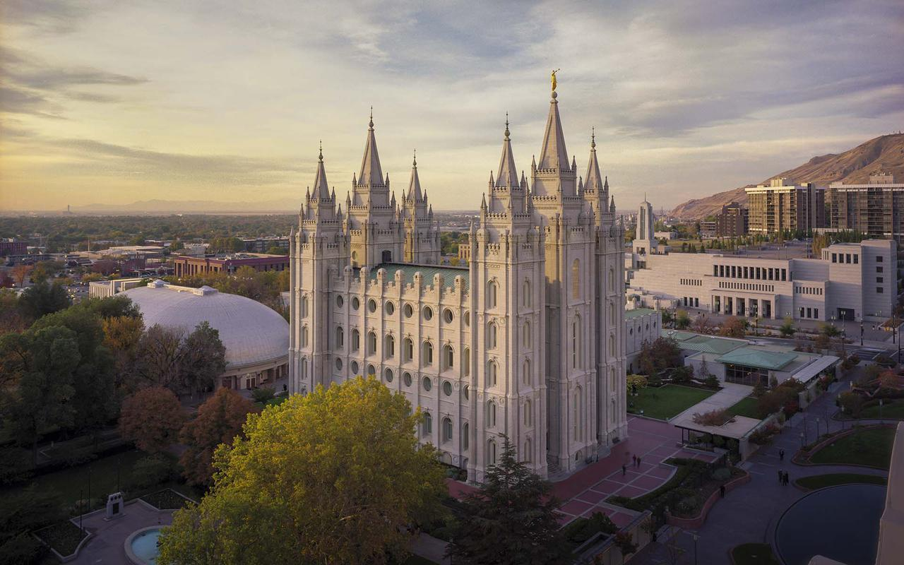

Salt Lake Temple
- Location
- Salt Lake City, Utah
- Dedicated
- April 6, 1893
- Construction Time
- 40 years (1853–1893)
- Height
- 210 feet (center east tower)
- Exterior
- Quartz monzonite granite quarried from Little Cottonwood Canyon
- Renovation
- Closed December 2019 for seismic upgrades and interior restoration. Base isolators allow the building to move up to 10 feet in any direction during an earthquake. Open house scheduled April–October 2027.